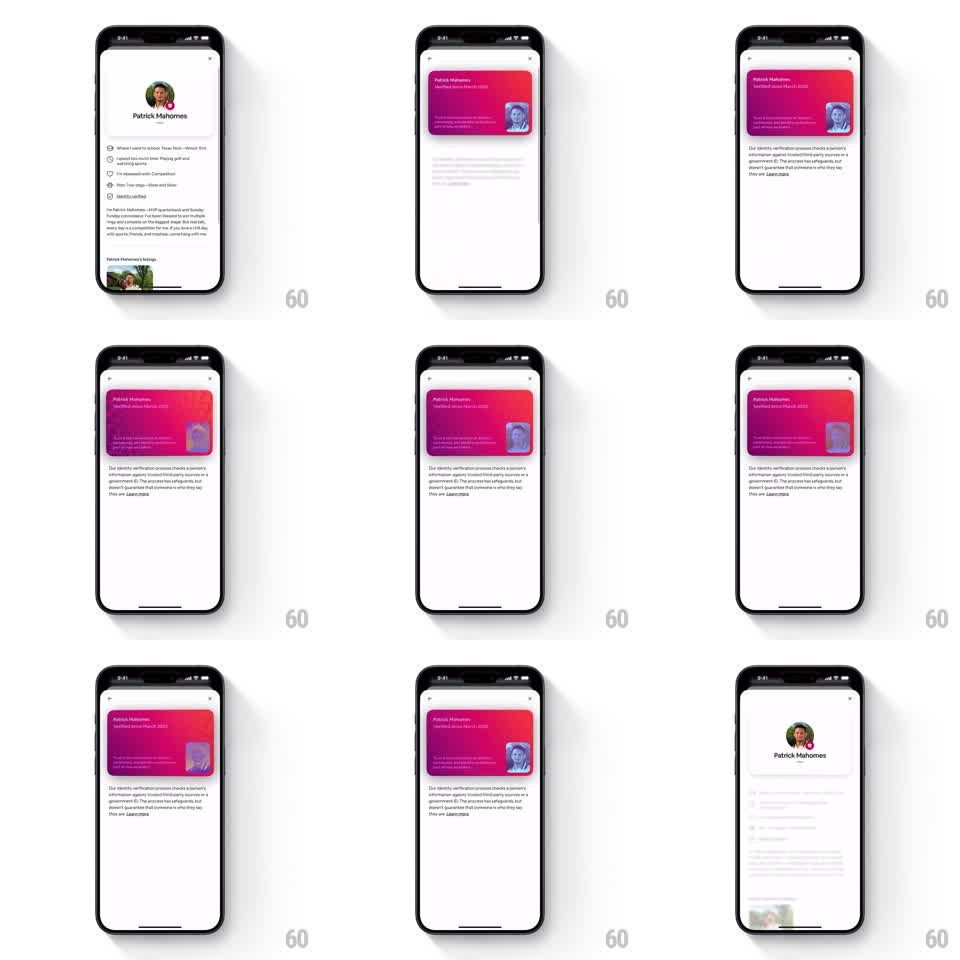

Media
Frame-by-frame

Rebuild this interaction 1:1: Airbnb's identity verification card - a pink-to-red gradient 3D ID card (Patrick Mahomes, "Verified since March 2020") that tilts in 3D as the user drags, with a holographic shimmer sweeping across its surface, and flips between front and back on tap.

Rebuild this interaction 1:1: Airbnb's identity verification card - a pink-to-red gradient 3D ID card (Patrick Mahomes, "Verified since March 2020") that tilts in 3D as the user drags, with a holographic shimmer sweeping across its surface, and flips between front and back on tap. ## Integration Integration: stack-agnostic spec - springs given as stiffness/damping, timed motions as duration + curve; map every value to your framework and animation library of choice. ## Scene White profile sheet for "Patrick Mahomes" (avatar, detail rows). At the top of the verification detail: a 3D card with a pink-red gradient, name and "Verified since March 2020" text, a photo chip on the right, and small verification copy. Below the card: a paragraph explaining the identity verification process with a Learn more link. ## Motion spec Pattern: 3D tilt card with holographic shimmer and flip. - Entrance: the card rotates in from a 30deg tilt to flat (spring ~260/18) as the sheet content fades up (250ms). - Drag/drag: the card rotates in 3D toward the touch point (rotateX/rotateY up to +/-18deg, tracking 1:1 with a short spring release ~200/16 when let go); perspective ~900pt. - Hologram: a specular shimmer band sweeps across the card as it tilts (gradient position mapped to tilt angle), with the photo chip showing a color-shifted holographic foil effect. - Tap: the card flips 180deg around its vertical axis (500ms ease-in-out with a slight scale dip to 0.96 at 90deg) revealing the back; tap again to return. - Idle: the card holds flat with a very subtle ambient tilt drift (+/-1deg, 4s sine). ## Calibration - Tilt follows the finger with no lag; release settles with one soft spring. - The shimmer is driven by tilt, not time - flat card, minimal shimmer. ## Reduced motion No tilt tracking; tap crossfades between card faces over 250ms. ## Don't miss - The holographic foil lives on the photo chip and shifts hue with tilt angle. - The card casts a soft floor shadow that moves opposite the tilt.